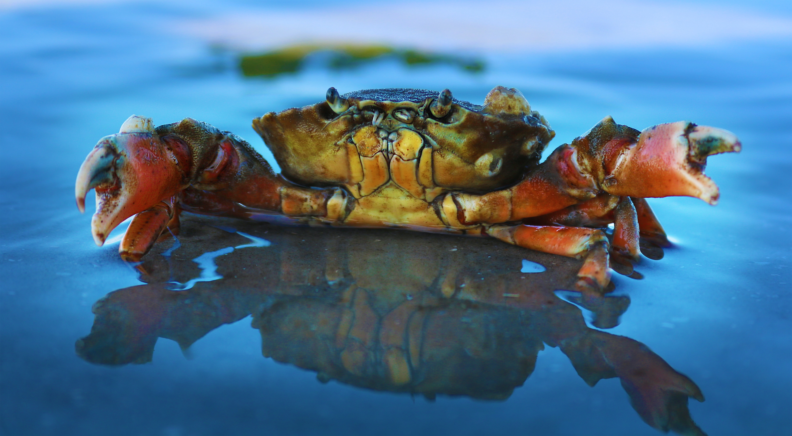

Cancer
WATER SIGN
SYMBOL : THE CRAB

Dear Cancer,
The kindess you possess is out of this world. Cancers being a water sign means they can be very emotional people, but also true to their hearts.They are extremely imaginative.They maybe be kind but very sacarstic, which is why they are very charming. Out of all the water signs, they are the funniest and charismatic. I have not yet met many Cancers in my day-to-day life, but many famous names I know include Luke Hemmings from 5sos,Princess Diana of Wales, Robbie Williams and Tom Hanks.The downside of Cancers are that deciding too often with their hearts than logically can lead them to an disadvantage at times.
Zodiac Signs Homepage
Leo